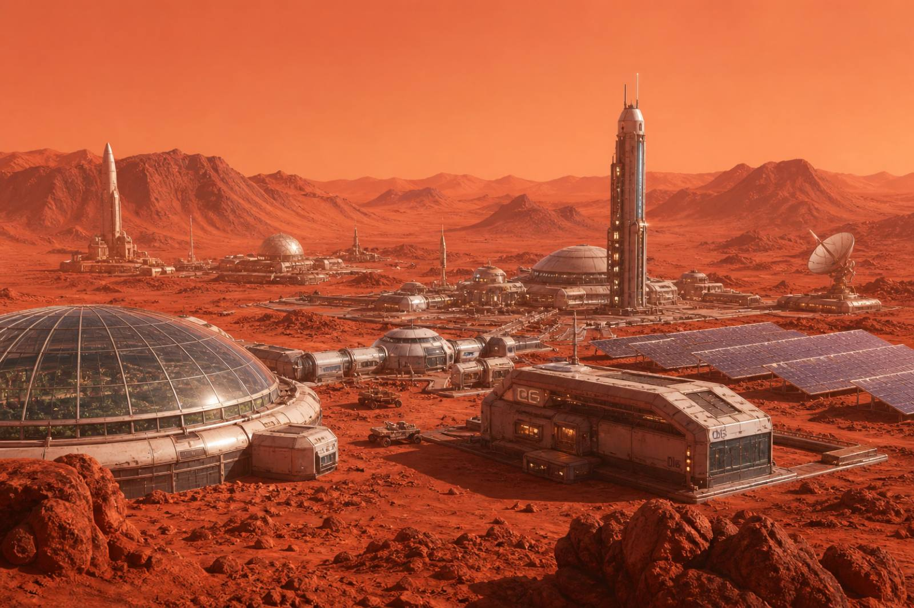
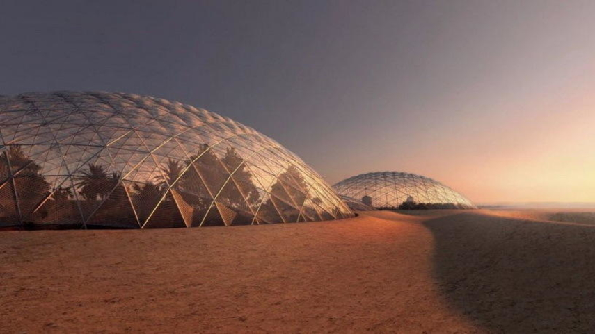

Нащо взагалі ця місія
Дослідження Марса допомагає краще зрозуміти, як формуються планети, як змінюється клімат і чи можливе існування життя за межами нашої планети. Одна з головних цілей місії — пошук слідів життя. Навіть найпростіші мікроорганізми можуть дати відповідь на одне з найбільших питань людства: чи ми самі у Всесвіті. Крім того, вивчення марсіанського ґрунту, атмосфери та водяних ресурсів відкриває можливості для майбутніх колоній. Ще одна важлива причина — технологічний розвиток. Космічні місії стимулюють створення нових матеріалів, роботів і систем, які згодом використовуються і на Землі. Те, що сьогодні виглядає як фантастика, завтра може стати звичайною частиною нашого життя (так, як колись смартфони здавалися магією 😄). У довгостроковій перспективі місія на Марс може стати першим кроком до розселення людства за межами Землі. Це важливо не тільки для розвитку, а й для безпеки — адже мати «запасний дім» ніколи не завадить. Отже, дослідження Марса — це поєднання науки, технологій і майбутнього. Це шанс зробити ще один великий крок вперед і розширити межі того, що ми вважаємо можливим.
Як виглядає колонія
Колонія на Марсі виглядає як поєднання наукової бази та футуристичного міста. Через суворі умови планети — низьку температуру, сильну радіацію та тонку атмосферу — більшість споруд мають герметичну конструкцію. Це великі куполи або модулі, з’єднані між собою тунелями, щоб люди могли пересуватись без скафандрів. Зовні колонія нагадує групу блискучих сфер або циліндрів, частково вкритих марсіанським ґрунтом для захисту від радіації. Деякі будівлі можуть бути розташовані під поверхнею — ніби підземні міста, де стабільніша температура і безпечніше для життя. Всередині все виглядає більш «земним»: житлові кімнати, лабораторії, зони відпочинку і навіть невеликі сади. Рослини вирощують у спеціальних теплицях — не тільки для їжі, а й для виробництва кисню. Уяви: ти гуляєш по Марсу… і раптом бачиш маленький зелений куточок, як міні-парк серед червоної пустелі 🌱 Енергію колонія отримує переважно від сонячних панелей або ядерних установок. Поруч можуть працювати роботи та дрони, які допомагають будувати нові модулі, досліджувати територію та видобувати ресурси. У майбутньому така колонія може вирости у справжнє місто — з вулицями під куполами, транспортом і навіть місцями для розваг. Хоча замість дощу там буде максимум пилова буря… але це вже такий марсіанський «спецефект» 😄

Які ж тут технології для виживання?
У колонії на Марс виживання забезпечується цілою системою високотехнологічних рішень, які працюють разом як один великий механізм. Основою життя є системи життєзабезпечення. Вони контролюють повітря, яким дихають люди: очищують його від вуглекислого газу та виробляють кисень. Часто для цього використовуються як хімічні установки, так і рослини у спеціальних біомодулях. Вода постійно переробляється — кожна крапля очищується та повертається в обіг, тому втрати мінімальні. Велику роль відіграють захисні технології. Будівлі колонії створені з багатошарових матеріалів, які витримують перепади температур і захищають від радіації. Часто модулі вкриті шаром марсіанського ґрунту або розташовані під поверхнею. Це створює природний «щит», який робить життя значно безпечнішим. Енергетичні системи забезпечують колонію електрикою. Сонячні панелі перетворюють світло на енергію, а додаткові джерела, наприклад компактні реактори, підтримують стабільну роботу навіть під час пилових бур. Уся енергія розподіляється автоматично, щоб важливі системи завжди працювали без перебоїв. Для роботи і досліджень активно використовуються роботи та автономні машини. Вони будують нові модулі, ремонтують обладнання і досліджують територію, куди людям небезпечно виходити. Це ніби команда невтомних помічників, які не бояться ні холоду, ні пилу. Транспорт у колонії також особливий. Є герметичні марсоходи, які дозволяють пересуватись по поверхні без ризику. Усередині самої колонії можуть бути автоматизовані системи переміщення — щось на кшталт компактного метро або капсул. Усі ці технології об’єднані в єдину цифрову систему керування. Вона постійно відстежує стан колонії: рівень кисню, температуру, запаси води та енергії. Якщо щось іде не так, система одразу реагує швидше, ніж людина встигне сказати: «Ем… здається, тут трохи холодно». Завдяки цим технологіям колонія на Марсі стає не просто місцем для виживання, а справжнім кроком до життя за межами Землі. 🚀

Хто стоїть за цим?
За цією місією стоять:
- Астронавти Патрік Зіркович, Сенді Білковна, Боб Губкович.
- Інженери Крабс Юджинович, Щупаль Сквідваренко.
- Марсоходи Карен-67, НеЗнаюХто-4
Додаткова інформація про місію:
- Астронавти, інженери й марсоходи полетять на місію 31 травня 2026 року
- За місією можна буде спостерігати у прямому ефірі (ефір почнеться о 14:00)
- Команда буде на Марсі 2 місяця (для того щоб збудувати купол життя)
Галерея

.jpg)
.jpg)